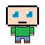
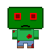
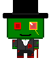

La réalisation du projet
Le travail de Clara:
•Void Bouger Perso :
Ce void, déplace le personnage selon la touche pressée.Il est défini en deux parties. La première ( if(dark==1){ if(keyPressed){ est consacrée au terrain 4 sombre.
La seconde, est consacrée à tous les autres terrains.
Tout d'abord, on indique que si on est dans le cas ou (dark==1) et qu'on appuie sur une touche, différentes images interviennent.
Si la touche activée est la flèche du haut alors, il faut changer l'image ("persoHd.png"). C'est l'image qui montre l'arrière du personnage (image à gauche). Et si la touche du haut est activée et que collB==0 alors le personnage monte d'une case : {persoY=persoY-75; }
Cela s'applique pour les quatre types de collisions.
Puis, on répète la même chose mais cette fois avec (dark==0).

•Void terrain :
Je me suis occupée de la sous fonction : void terrain.Cette fonction est consacrée aux terrains. J'ai déclaré un void terrain pour chaque terrain. Ainsi, il y a le void terrain 1 consacré au terrain 1, puis le void terrain 2 pour le terrain 2...
Tout d'abord, je déclare une case, un emplacement dans lequel je vais mettre l'image, et on appelle cet emplacement terrain1.
Puis, je déclare l’image choisie en disant que dans la case terrain1 on met l'image terrain1.png (ci-contre)
Après, on déclare entre parenthèses et dans l'ordre: -le nom de la "case" où est stockée l'image -les coordonnées du point où on place le coin en haut à gauche de l'image.Ainsi on obtient ( terrain1,0,0). Les points 0,0 signifient qu'il va mettre le coin d'en haut à gauche de l'image aux coordonnées x=0 et y=0 de la fenêtre.
•Void Collision :
Le void collision avait pour but de gérer les collisions de chaque terrain. Dans les premiers terrains se trouvent de nombreux arbres. Il a fallu empêcher le personnage d' y rentrer dedans. Pour se faire, j'ai utilisé quatre types de collisions,celles vers le haut, le bas, la gauche et la droite. Chaque terrain a une fonction if(terrain==x) qui gère ses collisions.
Pour mettre une collision il faut écrire ses coordonnées x et y
Ici, il fallait bloquer la gauche du personnage afin qu'il ne rentre pas dans l'arbre. Pour ce faire, il faut repérer et noter les coordonnées du point marron qui sont ici : persoX==150 et persoY==525
Puis, il faut indiquer la collision que l'on utilise. Il s'agit ici de la collision de droite.
CollD est la collision qui va vers la droite et qui empêche donc d'aller à gauche.
En temps normal, collD=0, cela signifie que le personnage peut aller partout sans être bloqué.
A l'inverse collG=1 signifie que le personnage est bloqué.
Ainsi on obtient : if(persoX==150 && persoY==525) {collD=1;} else {
Il faut mettre == dans la fonction if, pour vérifier les coordonnées ainsi que && entre les coordonnées X et Y du personnage.
Enfin, après chaque collision il faut écrire else.
Le travail d'Anne:
•Void image perso :
Son nom est assez explicite: c’est une fonction qui affiche l’image du personnage aux coordonnées où il se trouve actuellement.
L’image elle même, ainsi que la position du personnage, changent selon les actions réalisées par le joueur. Cela est géré par une autre fonction, le void bougerperso(). Le rôle du void imageperso() est de lier l’image à ces coordonnées.
Mais cette fonction sert aussi à afficher les objets que possède le personnage, ainsi que le nombre de vies qu’il lui reste.

•Void ennemi :
Cette fonction gère la position et les déplacements des ennemis pour chaque terrain.
En effet, nous avons choisi d’utiliser au maximum 5 ennemis sur un terrain. Nous avons donc créé 5 entités, qui tuent le héros lorsqu’elles se trouvent aux mêmes coordonnées que lui. Mais sur les terrains où nous utilisons moins d’ennemis, il faut décider que faire de ceux que nous n’utilisons pas. Cette fonction a pour rôle de placer ces ennemis en trop dans le coin en haut à gauche du terrain, qui est toujours occupé par un élément de décor et donc inaccessible pour le joueur. Il serait problématique de se faire tuer par un ennemi qui n’est pas sensé exister ! Par ailleurs, cette fonction remplace aussi l’image des ennemis non utilisés par une image vide, pour les rendre invisible.
Le void ennemi() est également de gérer les déplacements propres à chaque ennemi: certains font des allers-retours, d’autres avancent en ligne droite quand ils aperçoivent le personnage, d’autres encore tournent en rond… À chaque terrain, les ennemis sont différents, et ont des déplacements différents. Il est donc nécessaire de les redéfinir à chaque fois.
•Void yeti :
Cette fonction définit un ennemi nouveau: le yéti, qui se déplace aléatoirement, sauf si il aperçoit le personnage. Dans ce cas, il avance dans sa direction à une vitesse plus grande que sa vitesse normale.
De plus, dans son déplacement, il doit prendre en compte le décor et ne pas passer au travers. Nous avons donc dû établir pour lui un système semblable à celui des collisions pour le personnage.
Son fonctionnement étant très différent des autres ennemis, nous avons préféré créer une fonction uniquement pour lui.
Le travail de Yann:
Il développe le jeu, c’est à dire qu'il trouve comment coder les demandes de mon équipe. Je suis l'équivalent d’un chercheur, une fois que j’ai fini je donne le modèle pour que mes camarades puissent faire leurs voids avec ce qu’il veulent dedans. Par exemple, nous avons décidé de créer des ennemis qui se jetteront sur le joueur à sa vue.
le void PNJ : Ce void consiste à générer des interactions avec le zombie pas comme les autres ! le zombie gentleman :
les interactions sont :de générer des boîtes de dialogue qui changent en fonction des objets en possession du joueur et des choix dans la boîte de dialogue.
de faire bouger le zombie quand on lui donne la carotte ainsi que changer son humeur ( il passe de grimaçant à souriant )

•Void condition :
Ce void consiste à faire changer le joueur de carte quand il atteint la zone de sortie, mais aussi préparer la carte d'après en changeant certain paramètre ou fonction qui s’exerce
Pour changer le joueur de carte , j’utilise comme interrupteur l’entier “sortie” qui prend des valeurs suivant un fragment de la carte ci contre
ainsi quand le joueur se trouve sur une zone l’entier prend par exemple la valeur 3 et alors l’image affiché est celle du terrain d'après. sortie reprend alors la valeur 0.
le void condition permet aussi de changer la valeur de “restart” pour que la fonction associé fasse réapparaître à l’endroit correct. Mais aussi de changer la valeur de SONG dont j’expliquerai l'intérêt après et les coordonnées du perso qui doit par exemple se retrouver en bas de la carte d'après alors qu’il était en haut.
•Void music :
Ce void est assez explicite , il sert à gérer les musiques qui se jouent dans le jeu pour cela j’ai fait appel à une extension, une librairie de processing créer par des internaute : Minim, qui permet de manipuler les fichiers MP3 dans processing.
Un entier SONG qui prend différentes valeurs pour chaque musique me permet alors avec un if() de dire à une musique d'arrêter de se jouer et d’en démarrer une autre en boucle. A la fin l’entier SONG redevient neutre (c’est à dire SONG=0) sinon la musique se joue à chaque frame.. ce qui fait qu’on ne l’entend pas car elle n’as même pas le temps de commencer.
Le travail de Thomas:
•Partie graphique:
•
Avant de dessiner je devais tenir de la dimension de l’image que j’allais réaliser. En effet nous avons pris la dimension 900x900 pour l’affichage du jeu car en prenant des cases de 75x75 ça nous laisse assez de cases pour créer des terrains pouvant contenir les différents éléments sans qu’ils soient ni trop grand ni trop petit, mais surtout d’avoir des coordonnées plus facile à manipuler.
 •Les décors
Pour les décors je commencer d’abord par créer une case vierge de 75x75 pour qu’ils concordent avec les coordonnées. Après avoir créer cette case je dessine en pixel les éléments qui paraissent dans le type de terrain pour lequel c’était destiné. Par exemple pour les terrains dans la forêt j’ai dessiné des arbres qui seront ensuite considérer comme des obstacles mais aussi des décors au sol pour rendre le terrain moins vide
•Les décors
Pour les décors je commencer d’abord par créer une case vierge de 75x75 pour qu’ils concordent avec les coordonnées. Après avoir créer cette case je dessine en pixel les éléments qui paraissent dans le type de terrain pour lequel c’était destiné. Par exemple pour les terrains dans la forêt j’ai dessiné des arbres qui seront ensuite considérer comme des obstacles mais aussi des décors au sol pour rendre le terrain moins vide
•Les personnages
Comme pour les décors je créais tout d’abord une case en 75x75 pour ne pas qu’ils soient décalés dans les mouvements avec les coordonnées. Le premier choix pour cette catégorie était de trouver un style de dessin que j’allais reproduire pour les autres (par exemple les proportions du corps, les yeux, les contours). Par rapport aux décors, je devais aussi dessiner les différentes faces du personnages pour que ce soit plus réaliste en jeu.
Le personnage principal:
•Les terrains
Pour les terrains je prenais la dimension maximale je prenais la dimension maximale du jeu 900x900. Pour quasiment tous les terrains je mettais au moins un bloc d’obstacle pour ne pas aller en dehors de celui-ci sauf pour les passages dans d’autres niveaux. Pour les créer je faisais d’abord un croquis très rapide bloc par bloc puis je le réalisais en assemblant les différents éléments de décors correspondants.